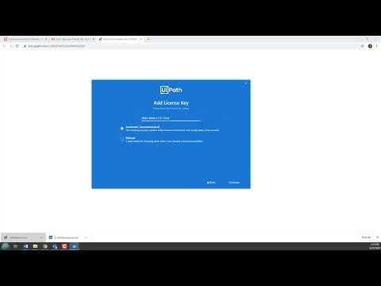

Döntési szemlélet és kitekintés
Öt feladat, három eszköz: begyakorlod a kiválasztást, és pontosan látod, mi vár rád a beadandókban, valamint a hetedik és a nyolcadik napon.
- el tudod dönteni egy feladatról, hogy robotra, API-ra vagy emberre való;
- átlátod, mit tud az öt mai robotod, és mi jön a hetedik és a nyolcadik napon;
- tudod, mi lesz az ötödik és a hatodik nap két beadandója.
Robot, API vagy ember? Döntsd el!
Az eszközt az adatok, az elérhető hozzáférés és az emberi döntés igénye alapján választjuk.
| Feladat | Lehetséges megoldás | Miért? |
|---|---|---|
| Árfolyam lekérése minden reggel és mentése Excelbe. | API-lekérés és ütemezett szkript vagy robot. | Az ár strukturált adatként lekérhető; az indítást és a fájlba írást is meg kell oldani. |
| 300 dolgozó adatainak átvitele egy API nélküli, régi HR-rendszerből. | RPA; elérhető export esetén először azt vizsgáld meg. | A képernyős robot akkor indokolt, ha nincs használható adatátviteli út. |
| Nagy összegű hitelkeret jóváhagyása. | Emberi döntés, géppel előkészített adatokkal. | A felelősséget és a kivételes körülményeket nem váltja ki a gépi adatfeldolgozás. |
| Webshoprendelések átadása a futárcég rendszerének. | API, ha mindkét rendszer támogatja a szükséges műveleteket. | A jogosultságokat, mezőpárosítást és hibakezelést is meg kell tervezni. |
| 40 PDF-számla végösszegeinek kigyűjtése. | Dokumentumfeldolgozás és emberi ellenőrzés. | Szöveges PDF és szkennelt kép eltérő feldolgozást igényel. RPA a munkafolyamatot szervezheti; OCR vagy AI csak szükség esetén kell. |
- Ha az API a szükséges műveletet elérhetővé teszi megfelelő jogosultsággal, érdemes először ezt vizsgálni. Általában kevésbé függ a képernyő elrendezésétől. Az ár, korlátok, hozzáférés és üzemeltetés alapján kell választani.
- Nincs API (régi rendszer, csak képernyő van)? Ez az RPA igazi terepe.
- Mérlegelés, felelősség, kivételes eset? Ember, legfeljebb géppel előkészítve.
- A jó megoldás gyakran kombináció: a gép előkészít, az ember dönt, a gép rögzít.
Mi jön ezután?
Az ötödik és a hatodik nap online beadandós alkalom, Zoomon kérdezhetsz az oktatótól. Mindkét beadandó a végső jegy 5%-a. Az ötödik nap témája folyamatmodell, szimuláció és összehasonlított fejlesztési javaslat. A hatodiké fiktív ügyféladatok előkészítése, ellenőrzése és betöltése a saját CRM-be. A jelenlétet az oktató vezeti; a beadandó pontszáma és a jelenléti nyilvántartás külön kezelendő. A hetedik és a nyolcadik nap a robotos alapokra épít.
- UiPath Academy: önálló tanuláshoz keresd a Studio és a kezdő automatizálási tanulási útvonalakat. A kínálat változhat; az aktivitások neve alapján is kereshetsz.
- UiPath Studio dokumentáció és Excel-aktivitások: a telepített csomaghoz tartozó verzió útmutatóját nézd.
Otthonra
A robotépítés további gyakorlásához ez a két lejátszási lista ad példákat:
YouTube · Lejátszási listaUiPath Beginners CourseLejátszási lista megnyitása új lapon →
YouTube · Lejátszási listaUiPath további példákLejátszási lista megnyitása új lapon →